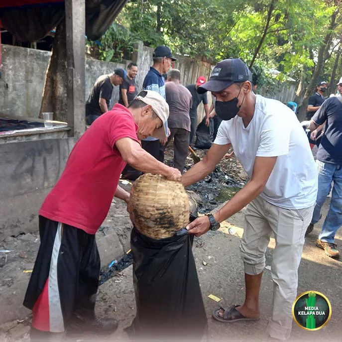

MediaKada | Kegiatan Gerebek Sampah di jalan inspeksi kali Pesanggrahan RT 001 RW 06 Kelurahan Kelapa Dua, kegiatan ini dilaksanakan untuk melakukan penataan dan pengaturan pembuangan sampah di wilayah Kelurahan Kelapa Dua, Minggu (19/04) Pagi.
Penumpukan sampah di Jalan Inpseksi kali Pesanggrahan terjadi dikarenakan adanya aktivitas bongkar muat sampah yang tidak terkendali, bukan hanya sampah berasal dari wilayah Kelurahan Kelapa Dua melainkan sampah dari wilayah lain. Sehingga menimbulkan Bau tidak sedap dan pemandangan tumpukan sampah merusak keindahan lingkungan dan menurunkan kenyamanan terutama di wilayah yang berdekatan dengan Jalan Inpseksi kali Pesanggrahan yaitu warga di RW 06 dan RW 07 Kelurahan Kelapa Dua.
Atas kejadian tersebut dan juga untuk menindak lanjuti laporan masyarakat yang sangat terganggu dengan adanya aktivitas bongkar muat sampah maka Lurah Kelapa Dua, Elfin Ridho Putra mengajak seluruh ASN Kelurahan Kelapa Dua, para Ketua RW, Ketua RT dan pengurus, Lembaga Musyawarah Kelurahan (LMK), FKDM, Satpol PP, Satgas Damkar, Babinsa, Binamas, Kader, Karang Taruna, PPSU dan warga untuk melaksanakan kerjabakti Bersama.
Selain itu Lurah Kelapa Dua melakukan langkah-langkah diantaranya penataan dan mengatur pembuangan sampah, melakukan penutupan lokasi pembuangan sampah dimulai tanggal 20 April 2026 selama dalam proses penataan dan pengendalian pembuangan sampah, Petugas sampah mandiri yang mengambil muatan sampah dari luar wilayah Kelurahan Kelapa Dua tidak diizinkan untuk membuang sampah di lokasi tersebut dan melakukan pendataan bagi petugas sampah mandiri yang mengambil sampah dari lingkungan Kelurahan Kelapa Dua.
Hadir pula dalam kegiatan tersebut Camat Kebon Jeruk Agus Mulyadi, Satgas Lingkungan Hidup Kecamatan Kebon Jeruk dan Petugas Dulkarmat Kecamatan Kebon Jeruk
Dalam sambutannya Camat Kebon Jeruk menghimbau "Dalam rangka mengurangi volume sampah rumah tangga diharapkan agar para pengurus wilayah aktif melakukan sosialisasi kepada warga untuk melakukan pemilihan sampah sejak dari rumah tangga, dan setiap RW hendaknya didirikan bank sampah sehingga sampah yang memiliki nilai ekonomis dapat dijual ke bank sampah diwilayah tersebut,” ujarnya./p>
Kegiatan kerjabakti Bersama berlangsung dengan semangat kekeluargaan dimulai pukul 7.00 WIB dan berakhir pukul 10.00 WIB, diharapkan kedepan ada solusi terbaik dari Dinas Lingkungan Hidup provensi DKI Jakarta atas permasalahan aktivitas bongkar muat sampah diwilayah tersebut sehingga tidak mengganggu aktivitas dan kenyamanan masyarakat sekitarnya./p>